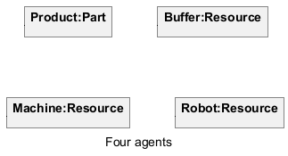

Assume that a product must execute process A in order to achieve a specific goal. The first step is to locate all resources capable of performing this process. In CMAS this can be achieved through negotiation with abstract interfaces to identify a suitable resource.
However, once a resource has been selected, the system must also determine how the product can reach that resource. This involves identifying a valid path through the system and selecting appropriate transportation resources. In a production system this can quickly becomes complex, as multiple resources, routes, and constraints may exist.
The Planner Agent in CMAS can automatically generate solutions to achieve a goal or satisfy a requirement. This reduces the need for the modeler to write explicit transportation and routing logic. Instead, the system designer models the capabilities and interfaces of the system, allowing the Planner Agent to derive a valid plan automatically.
The planner operates according to the following algorithm:
The execute(Plan) step represents the coordinated execution of the generated plan. A generated plan typically consists of a sequence of transportation and execution operations required to move a part from a source location to a target location. Each transportation operation is internally divided into a sequence of execution steps. The Planner Agent executes each step in order and waits for completion before continuing to the next step.
The following table illustrates the transportation steps:
| Step | Name | Target | Description |
|---|---|---|---|
| 0 | Init | Transporter:OnRun() | To initialize the transporter |
| 1 | Move to pickup | Transporter:OnRun() | Move transporter to the source "FromLocation" |
| 2 | Pickup from source | Transporter:OnRun() | Pickup from the source "FromLocation" |
| 3 | Detach from source | Transporter:OnRun() | Detach from the source |
| 4 | Attach | None | Attach to the transporter |
| 5 | Attach | Transporter:onRun() | Attach to the transporter |
| 6 | Move to leave | Transporter:onRun() | Move transporter to the target "ToLocation" |
| 7 | Leave to target | Transporter:onRun() | Leave at the target |
| 8 | Attach to target | Transporter:onRun() | Attach to target |
| 9 | End | Transporter:onRun() | Finalize transportation |
Some steps may only update the internal planning state and therefore do not require execution on a physical device. Other steps might involve motion or execution of skills on remote resources.
To react to a specific execution step, check the value of interface.specialisation.step.
In this example we have four Agents, one Part called Product and three resources Buffer, Machine and Robot.

Let’s create a model that can make use of the Planning Agent.
We start by building a Resource agent to represent the Machine. This resource will serve as a provider for process A. To model process A, we need to establish an interface. This interface will function as a destination for the part, meaning the part must be connected to the interface’s location in order for process A to run.
To achieve this, we create a LocationInterface, which is essentially a standard interface with a specialization to act as a location as well. We can name this interface InterfaceProcessA. If we expand the interface, we will notice it already includes two skills that were automatically generated when the location interface was created: Detach and Attach. These skills can be filled with logic to define how to attach and detach from the interface. For instance, attaching might require clamping. However, for now, we can leave these skills empty as long as they return the value processplan.done. Note, that these two skills also have the PostAction property set to ATTACHED and DETATCHED.
Additionally, we will find a Specialization folder within the interface that contains a VariableObject named Location. This variable represents the geometrical location of the interface, but it does not contain any specific variables. It’s up to the designer to determine how a location will be represented in the system. You could use real variables like x, y, z, rx, ry, rz for a full robot representation, or simply use an integer position to represent discrete locations, such as location 1, 2, 3, etc. Whatever approach we choose, it’s crucial that all agents in the system follow the same notation for location. In this example, a discrete number will suffice. We can achieve this by expanding the Position object and add a new VariableInteger named Position and give it a value of 2. This value will be a known position for the system to represent process interface A. We also make it a read only value by setting ReadOnly to true. Now we can create process A by adding a new processplannstructuredtext to Skills on the interface and the skill can look like this:
To run process A, we have a requirement that the part requesting the process must first be attached to it. We can model this requirement by selecting the Requirements folder for skill A and adding a new Requirement. Name this requirement RequirementAttached and set the WorkFlowType property to ATTACHED. This ensures that anyone wanting to execute skill A must first be attached to the interface.
Just like we created the Machine, we can now create the Buffer as a Resource. For the Buffer, we also need a LocationInterface, but this time, we can set the position to 1 instead. In this example, no additional specific skills are required on the Buffer, except for the one that was automatically created for the specialization. We can name the interface InterfacePart. To make it easier to distinguish the buffer skill, we can rename the skill Attach to AttachOnBuffer. We will need this later.
Now, let's create a Resource agent and name it Robot. On the Robot, create a new specialization interface called InterfacePart. This interface will be specialized for transportation tasks.
We can name the interface InterfacePart.
On a transportation interface, we will find three predefined variables: FromLocation, ToLocation, and Step. For both the FromLocation and ToLocation, we need to add an integer variable called Position. However, we won’t set a specific value for this variable, nor will we make it read only.
Now open the skill predefined skill Transport.
Now, create a Part agent and name it Part. On the Part, create a new Interface and name it InterfacePart. This will make the Part compatible with the buffer, robot, and machine. When the Part is deployed, it needs to be attached to the buffer in the system. To accomplish this, we need to define the logic for the deployment process. Select the Part and open the Actions editor. Here, we can use the dedicated skill AttachOnBuffer to ensure the Part attaches to the buffer, rather than to the machine or robot.
Now, open the process plan editor for the Part and create a new Goal. Edit the Goal by setting the process plan name to A and the interface to InterfacePart. Next, drag the goal to the goal chart and drop it on the start. The Part is now ready.
Now, we would like to add an operator to the system to handle situations when the robot is out of order, but only in those cases. We begin by adding a new Resource and naming it Operator. For the operator, we duplicate the interface of the Robot, which means creating an InterfaceLocation and naming it InterfacePart. Next, we update the two variables, FromLocation and ToLocation, by adding an integer variable named position, in the same way we did earlier for the Robot. Now, we need to implement the Transport skill. We start by renaming the default Transport skill to ManualTransport. This helps distinguish it as a manual task. Then, we set the cost for the ManualTransport skill, for example, 5. As long as the cost is higher than the robot's, any value will work. After that, we can implement the logic for the ManualTransport skill :
Now, we need to update the Robot agent to handle errors. We begin by adding an agent variable to the Robot. This can be a boolean variable named RobotError. At this point, it's possible to map it to a physical signal using adapters, but for this example, we will leave it as is. The Transport skill must now check the RobotError signal and refuse to participate by rejecting any negotiation attempts when RobotError is true. This can be easily done by adding an OR RobotError condition to the rejection part of the onNegotiate function.
When running the example and deploying a part, we can see in the console that the planner selects the Robot for transportation. This is because the robot's cost is lower than the operator's.
If we deploy several parts, the system will always select the robot. However, if we open the running tree, access the robot agent, and change the RobotError signal to true during runtime, we will see that the next part is planned with the operator instead. For more complex scenarios, note that the planner will always attempt to optimize the total cost of the plan. We can observe the same effect if we undeploy the robot because we no longer need it. To do this, simply select the robot in the running tree and click "Undeploy." When we want to use the robot again, we can deploy it again from the depot.
The example above illustrates a case where the planner must determine a transportation path to fulfill the requirement ATTACHED. However, the planning capabilities in CMAS extend beyond simple routing. In CMAS, planning is goal-driven and it is possible to state other requirements such as Skill requirement.
For example:
A → required by B B → required by C
A Skill Requirement defines a dependency between skills. If a skill requires another skill, the Planner Agent will ensure that the required skill is executed before the dependent skill can start. If a user specifies that the goal is to achieve C, the Planner Agent can automatically derives the required execution chain:
A → B → C
The planner then determines where each process can be executed and generates the transportation steps needed to move the product between resources. This means that the modeler specifies what should be achieved, while the Planner Agent determines how it can be achieved within the available system capabilities.
In CMAS, a Skill Requirement defines a dependency between skills. Understanding how these dependencies interact with resource selection is key to using the Planner Agent effectively.
Logical AND Across Skills
All skills listed as requirements for a skill must be executed before the dependent skill can run. This establishes a logical AND between the required skills.
For example: Skill C requires → Skill B Skill B requires → Skill A1, Skill A2
Each skill may be implemented by one or more resources compatible with its abstract interface. When multiple resources can execute a skill, the Planner Agent chooses the resource with the lowest cost or highest efficiency. This introduces a practical OR at the resource allocation level, while the logical dependencies between skills remain an AND.
Example:
Skill A can be executed by: R1 (cost 3) R2 (cost 5) Planner selects R1.
A skill requirement states a WorkFlowType and a Target value. For WorkflowType = SKILL, the Target must be specified as either: skill_name – the name of the skill that must be executed as a requirement. interface_name:skill_name – specifies that the skill must be executed by a resource implementing a particular interface.
It is also possible to specify other requirements such as goals.
The concept of Skill Requirements in CMAS can also be expressed in Structured Text using abstract interfaces inside a Skill.
First, an abstract interface is declared:
abstract interfacename;
Later in the code, a skill can be invoked through the interface just like in the previous example with Skill Requirements:
interfacename.B;
This has the same effect as specifying Skill B as a requirement in CMAS:
The Planner Agent will resolve the full dependency chain (e.g., A → B → C).
The Planner will select an appropriate resource implementing the abstract interface.
Execution order is determined automatically according to the dependencies.